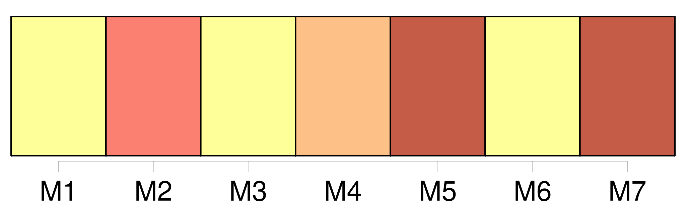
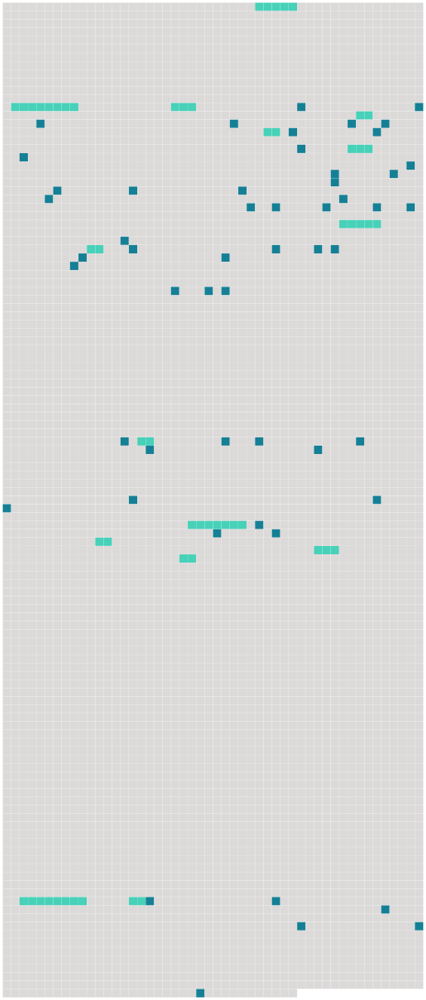

Longueur nb maillons : 68 mentions |
 |
Dans l'une d'elles se voyait une paillasse gonflée de feuilles sèches de blé de Turquie, avec une couverture de laine bise qui paraissait être le lit de [l'unique valet du manoir] [11 phrases]
Enfin un pas se fit entendre, pas lourd et pesant, celui d'une personne âgée ; une petite toux préalable résonna, le loquet de la porte grinça, et [un bonhomme, moitié paysan, moitié domestique] , fit son entrée dans la cuisine.
À l'apparition [du nouveau venu] , le chat noir, qui semblait lié de longue date avec [lui] , quitta les cendres de l'âtre et se vint frotter amicalement contre [ses] jambes, arquant le dos, ouvrant et refermant ses griffes, en faisant sortir de sa gorge ce murmure enroué qui est le plus haut signe de satisfaction chez la race féline. « Bien, bien, Béelzébuth, dit [le vieillard] en se courbant pour passer à deux ou trois reprises [sa] main calleuse sur le dos pelé du chat, afin de n'être pas en reste de politesse avec un animal ; [je] sais que tu m'aimes, et nous sommes assez seuls ici, [mon] pauvre maître et [moi] , pour n'être pas insensibles aux caresses d'une bête dénuée d'âme, mais qui pourtant semble vous comprendre.
» [Pierre] , c'était le nom [du vieux serviteur] , prit une poignée de bourrées, la [jeta] sur le feu à demi mort ; les brindilles craquèrent et se tordirent, et bientôt la flamme, poussant un flot de fumée, se dégagea vive et claire au milieu d'une joyeuse mousqueterie d'étincelles. [2 phrases]
[Pierre] s'assit sous le manteau de la cheminée, festonnée d'un vieux lambrequin de serge verte découpé à dents de loup et tout jauni par la fumée, sur un escabeau de bois, ayant Béelzébuth à côté de [lui] Le reflet du feu éclairait [sa] figure, que les années, le soleil, le grand air et les intempéries des saisons avaient boucanée pour ainsi dire et rendue plus foncée que celle d'un Indien caraïbe ; quelques mèches de cheveux blancs, s'échappant de [son] béret bleu et plaquées sur les tempes, faisaient encore ressortir les tons de brique de [son] teint basané ; des sourcils noirs contrastaient avec [sa] chevelure de neige. Comme les gens de la race basque, [il] avait la figure allongée et le nez en bec d'oiseau de proie.
De grandes rides perpendiculaires et semblables à des coups de sabre sillonnaient [ses] joues de haut en bas. [Ses] grègues demi-larges laissaient voir la trame et la chaîne d'une étoffe aussi claire qu'un canevas à broder, et il eût été impossible de savoir si elles avaient été en drap, en ratine ou en serge. [1 phrases] Des reprises assez visibles, et faites par une main plus habituée à tenir l'épée que l'aiguille, fortifiaient les endroits faibles, et témoignaient du soin qu'apportait [le possesseur de ce vêtement] à en pousser la longévité jusqu'aux dernières limites. [2 phrases] Des semelles de corde rattachées par des lacets bleus à un bas de laine dont le pied était coupé servaient de chaussures à [Pierre] et rappelaient les alpargatas espagnoles. Ces grossiers cothurnes avaient sans doute été choisis comme plus économiques que le soulier à bouffette ou la botte à pont-levis ; car une stricte, froide et propre pauvreté se trahissait dans les moindres détails de l'ajustement [du bonhomme] et jusque dans [sa] pose d'une résignation morne. Le dos appuyé au pan intérieur de la cheminée, [il] avait croisé au-dessus de [son] genou [ses] grosses mains rougies de tons violacés comme des feuilles de vigne à la fin de l'automne, et [faisait] un pendant immobile au chat.
Béelzébuth, accroupi dans la cendre, en face de [lui] , d'un air famélique et piteux, suivait avec une attention profonde le bouillonnement asthmatique de la marmite. « Le jeune maître tarde bien à venir aujourd'hui, murmura [Pierre] , en voyant à travers les vitres enfumées et jaunes de l'unique fenêtre qui éclairât la cuisine diminuer et s'éteindre la dernière barre lumineuse du couchant au bord d'un ciel rayé de nuages lourds et gros de pluie. [3 phrases] Le battant s'ouvrit ; [Pierre] se leva, [ôta] respectueusement [son] béret, et le nouveau venu fit son apparition dans la salle, précédé du vieux chien dont nous avons déjà parlé, et qui essayait une gambade et retombait lourdement, appesanti par l'âge. [21 phrases]
Le Baron s'assit en silence devant la petite table, après avoir répondu d'un geste de main bienveillant au salut respectueux de [Pierre] [Celui -ci] détacha la marmite de la crémaillère, en [versa] le contenu sur [son] pain taillé d'avance dans une écuelle de terre commune qu' [il] posa devant le Baron ; c'était ce potage vulgaire qu'on mange encore en Gascogne, sous le nom de garbure ; puis [il] tira de l'armoire un bloc de miasson tremblant sur une serviette saupoudrée de farine de maïs et l' [apporta] sur la table avec la planchette qui la soutenait. [7 phrases]
[Pierre] se tenait debout à quelque distance, immobile comme ces longues et roides statues de granit qu'on voit aux porches des cathédrales, respectant la rêverie de [son] maître et attendant qu'il [lui] donnât quelque ordre. [2 phrases]
D'une famille jadis puissante et riche il ne restait qu'un rejeton isolé, errant comme une ombre dans ce manoir peuplé par ses aïeux ; d'une livrée nombreuse il n'existait plus qu' [un seul domestique, serviteur par dévouement] , [qui] ne pouvait être remplacé ; d'une meute de trente chiens courants il ne survivait qu'un chien unique, presque aveugle et tout gris de vieillesse, et un chat noir servait d'âme au logis désert. Le Baron fit signe à [Pierre] qu'il voulait se retirer.
[Pierre] , se baissant au foyer, alluma un éclat de bois de pin enduit de résine, sorte de chandelle économique qu'emploient les pauvres paysans, et [se mit] à précéder le jeune seigneur ; Miraut et Béelzébuth se joignirent au cortège : la lueur fumeuse de la torche faisait vaciller sur les murailles de l'escalier les fresques pâlies et donnait une apparence de vie aux portraits enfumés de la salle à manger dont les yeux noirs et fixes semblaient lancer un regard de pitié douloureuse sur leur descendant. Arrivé à la chambre à coucher fantastique que nous avons décrite, [le vieux serviteur] alluma une petite lampe de cuivre à un bec dont la mèche se repliait dans l'huile comme un ténia dans l'esprit-de-vin à la montre d'un apothicaire, et [se retira] suivi de Miraut. [58 phrases] Pendant ce colloque, [Pierre, éveillé par les abois de Miraut] , s'était levé et [avait rejoint] [son] maître sous le porche.
Mis au fait de ce qui se passait, [il] alluma une lanterne, et tous trois se dirigèrent vers la charrette embourbée. [2 phrases]
Ce renfort inattendu, et surtout l'expérience de [Pierre] , eurent bientôt fait franchir le mauvais pas au lourd chariot, qui, dirigé sur un terrain plus ferme, atteignit le château, passa sous la voûte ogivale et fut rangé dans la cour. [1 phrases] [Pierre] trouva au fond du bûcher un fagot et quelques brassées de broussailles qu' [il] jeta dans la cheminée et qui se mirent à flamber joyeusement. [8 phrases]
» |
 |
Il est possible de télécharger la ressource sur la page Ortolang |
Si vous avez des questions ou vous voyez des erreurs, merci d'envoyer un mail à silvia.federzoni89@gmail.com |